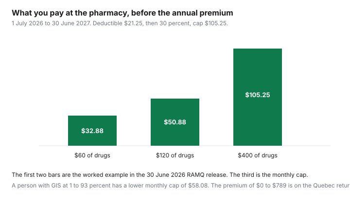

Healthcare · Canada
Québec's Public Prescription Drug Plan in 2026–27: Premiums up to $789, the Monthly Deductible, and the Annual Cap
Quebec does not treat prescription insurance as optional. If you live in the province permanently, you are on a private group plan or on the public plan run by the Régie de l'assurance maladie du Québec. The surprise for many households is the annual premium, which is calculated with the Quebec income tax return rather than rung up at the pharmacy. For 1 July 2026 to 30 June 2027, the RAMQ release of 30 June 2026 sets that premium at $0 to $789 a person. This page is how the premium, the monthly deductible, and the caps fit together. It is not tax advice and not medical advice. RAMQ and Revenu Québec assess what you owe. Your pharmacist applies the rate on a covered drug.
Key takeaways
- From 1 July 2026 to 30 June 2027 the annual premium is $0 to $789 per person, paid through the Quebec return. The pharmacy deductible is $21.25 a month. Coinsurance is 30 percent. The monthly cap is $105.25, or $58.08 with GIS at 1 to 93 percent.
- Under 65, access to a private plan means you join that plan. The public plan is for people who do not have that access. At 65, RAMQ says you can choose.
- A $60 covered drug costs $32.88 in the release's own example. A second $60 drug the same month costs $18 more. At $400 of covered drugs in a month you are at the $105.25 cap.
- Twelve times $105.25 is $1,263. iA's 16 July 2026 note states that annual out-of-pocket maximum. The premium is extra.
- The public plan covers about 3.9 million people. The release says about 33 percent pay no annual premium and about 21 percent receive drugs completely free. It does not list those groups by name in the official text.
Who must be covered, and when a group plan is mandatory instead of RAMQ
RAMQ's prescription-drug pages say everyone who has taken up residence in Quebec permanently must have drug insurance, through the public plan or through a private plan such as group insurance or an employee benefit plan. If you are eligible for a private plan, you must join it and provide coverage for your spouse and children who are not already on another private plan.
People under 65 who can access a private plan have to join it and deregister from the public plan if they are on it. If you lose the private plan, you register for the public plan. RAMQ's page comparing health insurance with drug insurance says you cannot choose between a private plan and the public plan unless you are 65 or over.
Private plans show up through a job, a professional association or order, a union, a spouse, or a parent. "I prefer the public rates" is not an option while that access exists and you are under 65. The workplace drug guide is how to read the private plan you are required to join. The bridge-to-65 guide is the employment decision. The provincial comparison is why this rule is Quebec's and not Ontario's. OHIP+ does not apply here.
Children are part of the same duty. RAMQ's eligibility page says a person under 18 whose parents do not have a private plan can be on the public plan, and a child under 18 staying in Quebec for more than six months can be eligible. If a parent has a private plan, the parent provides coverage for the child. Temporary residents 18 and older are not eligible for the public plan on the obligation page cited here. Confirm a move into or out of Quebec with RAMQ rather than assuming the premium year follows the lease.
The 2026–27 premium and how it's collected on your Québec return
The 30 June 2026 release, published by RAMQ, says the parameters change on 1 July 2026 and stay in effect until 30 June 2027. The annual premium paid to Revenu Québec when you file goes from a maximum of $766 to a maximum of $789, a 3 percent increase.
The premium varies with income and applies to people insured by the public plan, not only to people who bought drugs that year. You can owe a premium in a year when you did not stand at a pharmacy counter. The release says about 33 percent of people covered pay no annual premium.
The premium is per person. A couple who are both on the public plan can each be assessed. Two maximums are 2 times $789, which is $1,578. That couple figure is arithmetic from the per-person maximum. The release does not print a special couple premium. Income changes the amount between $0 and $789. This page does not print the income brackets that set a premium between those ends, because the release's table does not list them. Revenu Québec calculates it on the return. The Quebec personal-finance guide is the wider point that the provincial return is not a footnote on the federal one.
At the pharmacy: the monthly deductible and coinsurance
The pharmacy bill is separate from the premium. For 1 July 2026 to 30 June 2027 the monthly deductible is $21.25, down from $22.
Coinsurance stays at 30 percent, applied after the deductible is subtracted. The release's example is Philippe, age 43, buying one covered drug that costs $60. He pays the $21.25 deductible. Coinsurance is 30 percent of $38.75, which the release states as $11.63. His contribution is $32.88. A second $60 drug the same month has no new deductible. He pays 30 percent of $60, which is $18. The two drugs together are $50.88. Whatever the number of covered drugs, he does not pay more than $105.25 that month.
The deductible is monthly. It starts again the next month. A family does not share one $21.25 deductible on the example given. Each insured person who buys covered drugs meets their own deductible and their own cap. A drug the public plan does not list is not in this arithmetic. Ask the pharmacist whether the DIN is on the List of Medications before you treat a cash price as a contribution toward the cap.
The monthly and annual maximum contributions, and who pays less or nothing
The monthly maximum rises from $102.64 to $105.25 for adherents and for people 65 and older who do not receive the Guaranteed Income Supplement.
For people who receive the GIS at a rate of 1 to 93 percent, the monthly maximum rises from $57.29 to $58.08. iA Financial Group's note of 16 July 2026 states a maximum annual out-of-pocket of $1,263 since 1 July 2026, matching 12 times $105.25. iA also states a $697 annual maximum for people 65 and older who receive the GIS at a rate of 1.5 to 94 percent. That band is worded differently from the RAMQ release's "1 to 93 percent" and its monthly figure of $58.08. This page uses the release for the monthly caps and cites iA for the $1,263 annual figure. It does not merge the two GIS descriptions into a new rule. Twelve times $58.08 is $696.96, which is arithmetic, not a line in the release.
The release says the public plan covers 3.9 million people, about 33 percent pay no annual premium, and about 21 percent have drugs completely free. The official text does not name the free-drug categories. Do not guess that every GIS recipient pays nothing. The table shows a reduced monthly cap for GIS at 1 to 93 percent, which is a lower bill, not a zero bill. Children, social-assistance recipients, and people on a higher GIS rate may fall into the free group. Confirm that with RAMQ's free-access information rather than with this summary. After you hit the monthly cap, further covered drugs that month are usually free until the month ends. The cap resets the next month. It is not a single annual stop at the pharmacy unless your spending hits the cap in enough months to reach the annual maximum.
| Rate | 1 Jul 2026 to 30 Jun 2027 | Prior year, for scale |
|---|---|---|
| Annual premium, on the Quebec return | $0 to $789 per person | $0 to $766 |
| Monthly deductible | $21.25 | $22.00 |
| Coinsurance after the deductible | 30 percent | 30 percent |
| Monthly maximum, no GIS | $105.25 | $102.64 |
| Monthly maximum, GIS at 1 to 93 percent | $58.08 | $57.29 |
| Annual pharmacy maximum, no GIS | $1,263 | $1,232, from iA's "before 1 July 2026" column |
| Covered drugs in the month | Arithmetic | You pay |
|---|---|---|
| $60 | $21.25 plus 30 percent of $38.75 | $32.88 |
| $120 | $32.88 on the first $60, then 30 percent of the second $60 | $50.88 |
| $400 | The uncapped formula would exceed the monthly maximum. The release says you never pay more than the cap. | $105.25 |

Seniors 65+: GIS, exemptions and switching from a group plan
At 65 the choice opens. RAMQ says you cannot choose the public plan over a private one unless you are 65 or over.
A retiree who is offered a group plan can compare that premium and that formulary with the public premium of up to $789 and the pharmacy cap of $105.25 a month, or $58.08 with GIS at 1 to 93 percent. Leaving a private plan means registering for the public plan. Joining a private plan means deregistering from the public plan. Do both steps. A month on neither is the gap the obligation page tells you to avoid.
The GIS reduction is a pharmacy cap, on the release, not an automatic premium waiver. People 65 and older who do not receive the GIS are in the $105.25 row with other adults. Ask RAMQ whether your GIS percentage puts you in the $58.08 row or in the group that pays nothing. The release's 21 percent "completely free" figure is the size of that group, not a definition of it. A spouse's private plan can still pull you onto that private plan if you are under 65. At 65, re-read the choice before you auto-renew a retiree health package. The retiree-benefits guide is the employment side of that decision.
Budgeting examples for a couple and a single retiree
These examples use only the published maximums. They are not a tax calculation.
A couple, both under 65, both on the public plan because neither has a private plan, and both assessed at the maximum premium, would see 2 times $789, or $1,578, on the premium side of the Quebec return. If each of them also buys enough covered drugs to hit the monthly cap every month, each pays 12 times $105.25, or $1,263, at the pharmacy. Two people at that ceiling are 2 times $1,263, or $2,526, plus the premiums. Most households will not hit the cap every month. Use the $60 and $120 rows for a quieter year. A month with no purchase has a $0 pharmacy contribution and does not erase the premium.
A single retiree, 65 or older, without GIS, faces the same $0 to $789 premium and the same $105.25 monthly cap. A year at the pharmacy cap is $1,263, plus whatever premium the return assesses. A single retiree with GIS at 1 to 93 percent uses $58.08 as the monthly pharmacy cap. A year at that cap is 12 times $58.08, or $696.96, which is arithmetic. iA's $697 figure uses a GIS band worded as 1.5 to 94 percent. Budget with the monthly number RAMQ printed, and confirm the band. None of these examples includes a drug the plan does not cover. Add that cash price outside the cap.
Sources
- Régie de l'assurance maladie du Québec, news release 30 June 2026, on Quebec.ca: rates for 1 July 2026 to 30 June 2027, Philippe's $60 example, 3.9 million people covered, about 33 percent with no premium and about 21 percent with drugs free. As of 27 Sep 2026.
- iA Financial Group, 16 July 2026: deductible $21.25, coinsurance 30 percent, maximum annual out-of-pocket $1,263, maximum annual premium $789, and a $697 GIS note with a different band wording.
- RAMQ pages on the obligation to be insured, eligibility, and the difference between health insurance and drug insurance: private plan mandatory under 65, choice at 65. As of 27 Sep 2026.
- Check the RAMQ rate table on ramq.gouv.qc.ca. The figures above are from the RAMQ release of the same date and from iA. Confirm on RAMQ before you file.
Frequently asked questions
Do I have to join the RAMQ drug plan?
If you live in Quebec permanently, you must have drug insurance. RAMQ's pages say that if you are eligible for a private plan you must join it, and cover your spouse and children who are not already on a private plan. People under 65 who can access a private plan do not get to choose the public plan instead. If you have no private plan, you register for the public plan. At 65, RAMQ says you can choose. This is the public rule, not advice about your employer's contract.
How much is the RAMQ premium for 2026–27?
The RAMQ news release of 30 June 2026 sets the annual premium at $0 to $789 per person for 1 July 2026 to 30 June 2027, up from $0 to $766. It is paid to Revenu Québec through the income tax return, and it depends on net family income. It is not the amount you pay at the pharmacy. Two adults both on the public plan can each owe a premium. $1,578 would be two maximums. That couple total is arithmetic, not a separate rate in the release.
How do the deductible and coinsurance work?
Each month you pay a $21.25 deductible on the first covered purchases, then 30 percent of the rest, until you hit your monthly maximum. The release's example is a 43-year-old buying a $60 drug: $21.25 plus 30 percent of $38.75, which is $11.63, for $32.88. A second $60 drug the same month is 30 percent of $60, or $18, because the deductible is already paid. The rates apply from 1 July 2026 to 30 June 2027.
What is the maximum I can pay in a year?
At the pharmacy, the release caps adherents, and people 65 and older who do not receive the Guaranteed Income Supplement, at $105.25 in a month. Twelve times $105.25 is $1,263, and iA Financial Group's 16 July 2026 note states the same $1,263 maximum annual out-of-pocket. After the monthly cap, other covered drugs that month are free. The annual premium of up to $789 is on top of that pharmacy spending. It is collected on the tax return.
Do seniors pay less?
People 65 and older who do not receive the GIS use the $105.25 monthly cap. People who receive the GIS at a rate of 1 to 93 percent have a monthly cap of $58.08, up from $57.29, in the 30 June 2026 release. The release does not say that partial GIS sets the premium to zero. It does say about 21 percent of people on the public plan have drugs completely free and about 33 percent pay no annual premium. Confirm which group you are in with RAMQ.
Researched and drafted with AI assistance and fact-checked against official Canadian sources. How we create content.